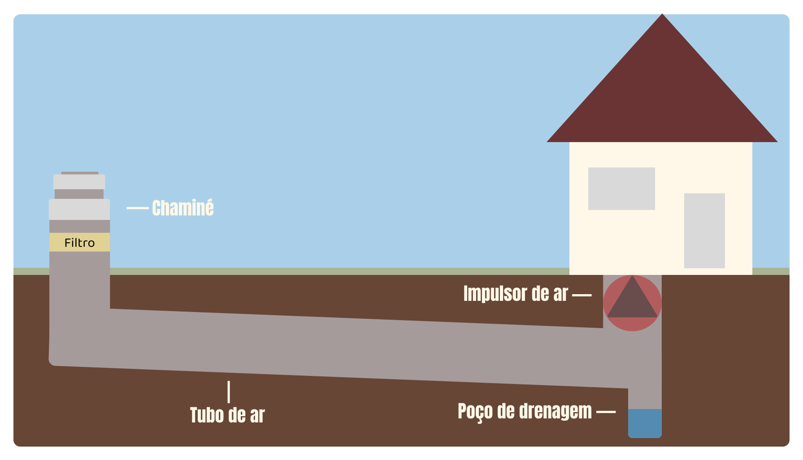

Poços Canadenses
Os poços canadenses, também conhecidos como sistemas de climatização geotérmica passiva, são uma solução sustentável e inovadora para o aquecimento e resfriamento de ambientes. Baseados no uso da temperatura constante do subsolo, esses sistemas aproveitam tubos enterrados a uma profundidade estratégica para trocar calor com o solo, proporcionando conforto térmico natural ao longo do ano. Simples, eficientes e ecológicos, os poços canadenses representam uma alternativa econômica e ambientalmente responsável à climatização tradicional.
Representação Gráfica
Como funciona
1. Captação do ar externo
O sistema começa com uma entrada de ar, como uma chaminé, geralmente posicionada em um local estratégico fora da edificação. Essa entrada pode incluir filtros para garantir a qualidade do ar que será processado.
2. Troca de calor com o solo
O ar captado é conduzido por tubos enterrados a uma profundidade entre 1,5 e 3 metros, onde a temperatura do solo permanece relativamente estável ao longo do ano. À medida que o ar se desloca pelos tubos, ele troca calor com o solo:
No verão, o ar quente perde calor para o solo mais frio, sendo naturalmente resfriado.
No inverno, o ar frio ganha calor do solo, sendo aquecido antes de entrar na edificação.
3. Distribuição do ar tratado
O ar que passou pela troca térmica é enviado para dentro do ambiente com o auxílio de um impulsor de ar, ajudando a manter uma temperatura interna confortável e reduzindo a necessidade de sistemas de climatização convencionais.
Benefícios do Projeto
1. Eficiência e Sustentabilidade
Utilizando a energia natural e constante do solo, os Poços Canadenses requerem menos eletricidade para operar, o que reduz a pegada de carbono. Esse sistema é uma escolha ideal para pessoas e empresas que buscam alinhar conforto e responsabilidade ambiental.
2. Economia Financeira
A economia gerada nas contas de energia ao longo dos anos compensa o investimento incial de instalação, especialmente em regiões com climas que exigem climatização constante.
3. Conforto Térmico
Com a temperatura do solo variando entre 15°C e 20°C em grande parte das regiões, os Poços Canadenses proporcionam climatização passiva, garantindo ambientes agradáveis no verão e no inverno, sem os picos de consumo energético característicos dos métodos tradicionais.
4. Durabilidade e Manutenção
Ao contrário dos sistemas convencionais que necessitam de reparos frequentes, os Poços Canadenses exigem manutenção mínima, sendo uma solução altamente durável, com vida útil que pode ultrapassar três décadas.